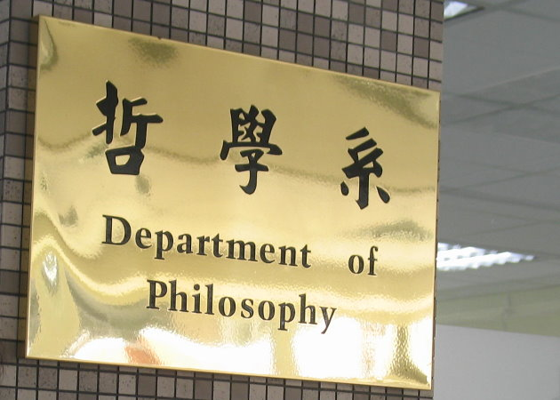
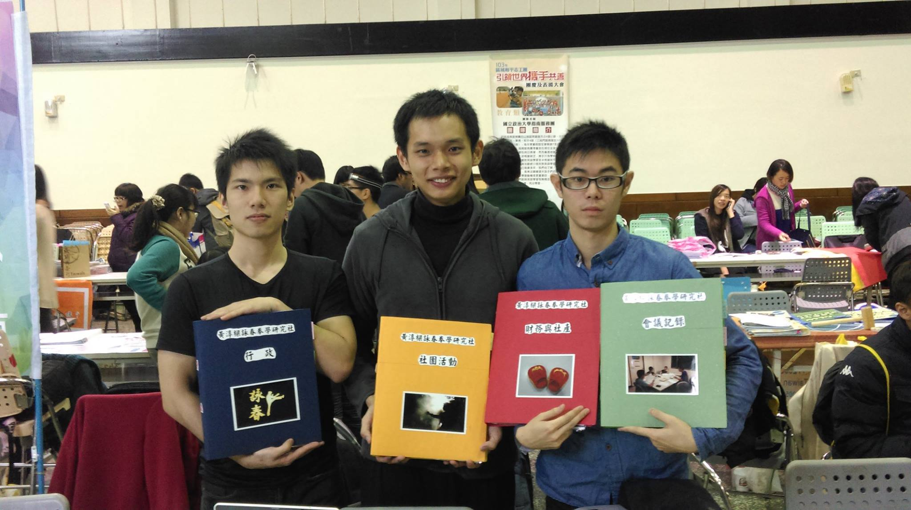

2011-2016

國立政治大學哲學系
大學科系-哲學系
2011年9月初次來臺念大學，哲學系教會了我，學會看見事情本質，鍛鍊批判性思考能力，加強邏輯能力，讓我在面對新的能力更能掌握要點與快速學習。


社團經驗
| 如來實證社 | ( 透過禪行開啓本有如來智慧，心安心定面對生活一切，隨順圓滿。) |
|---|---|
| 2013-2016 副社長 - |
協助社長管理社團，維繫社員感情，幫助社員更融入禪行即生活，突破自我。 |
| 詠春拳社 | ( 葉問大徒弟-黃淳樑派系下詠春體系，注重實戰，透過實戰中，留力不留手練習，掌握拳法與技法。 ) |
|---|---|
| 2013-2015 社 長 - |
建立社團規章與制度，推廣與招生，維繫社員感情，協作師父教導同學一起突破詠春技法。 |